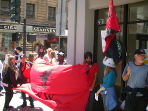

Submitted on Wed, 08/08/2007 - 12:17pm
 Disclaimer - the following editorial is not by a member of the IWW, nor do they necessarily agree with or endorse our organization. The editorial is posted here because it closely matches the perspective of many IWW members and the Preamble to the IWW Constitution. It also affects IWW members in Industrial Union 670 directly.
Disclaimer - the following editorial is not by a member of the IWW, nor do they necessarily agree with or endorse our organization. The editorial is posted here because it closely matches the perspective of many IWW members and the Preamble to the IWW Constitution. It also affects IWW members in Industrial Union 670 directly.
By Richard Mellor - AFSCME Local 444 Retired, Oakland CA, August 2, 2007.
San Leandro CA - After absorbing the severe financial stress of being locked out for a month, members of Teamsters Local 870 suffered further setbacks in the contract deal brought to them by Teamster officials. The employers, Waste Management Co, imported scabs from other parts of the U.S. during the lockout and brought in their other allies, a mediator and Oakland mayor, Ron Dellums. The liberal community and the heads of the labor movement in this area have revered Dellums, a former congressman and mentor of another popular liberal Democrat, Barbara Lee.
When asked by the press if the lockout “was a test of his leadership” Dellums replied, "I don't take it to have anything to do with me. It has to do with a company in a dispute with a labor union. It would be a gigantic mistake for me to personalize this. That's a journey I choose not to go on." (1)
With friends like these, it should come as no surprise that Waste Management got what they wanted. According to press reports, management got a five-year contract while workers got a 5% raise which with inflation will most likely be a wage reduction
Submitted on Sat, 07/21/2007 - 4:40am
 Submitted by sparrow, x326388
Submitted by sparrow, x326388
"We actually don't have any other way to exercise (international) pressure except calling our friends and supporters in the trade unions around the globe to call for this Boycott and Divestment." stated Manawel Issa Abdellal,(see photo) member of the Executive Committee of the 250 thousand member Palestinian General Federation of Trade Unions (PGFTU) in a recent speech to labor movement supporters in San Francisco.
"Factories actually exist inside the settlements and their products are going to the markets in Europe and in the United States. The whole world is saying these settlements are actually illegal settlements. So why would it be wrong to boycott them?"
Submitted on Mon, 07/16/2007 - 12:47pm
For the third Saturday in a row, a small group of Bay Area IWW members distributed leaflets and information to Starbucks customers, passersby, and workers at one of the many Starbucks locations in the area in solidarity with the Starbucks Workers' Union organizing campaign.
Reactions were generally positive, and the Bay Area IWW pledges to continue the practice each Saturday at approximately noon at a different location each week. So far the Bay Area IWW has visited the following Starbucks coffee houses:
- June 30, 2007 - San Francisco at Powell and O'Farrell Streets (near Union Square).
- July 7, 2007 - Berkeley at Shattuck and Kittredge near the Shattuck Cinema where the IWW currently is negotiating their first contract.
- July 14, 2007 - Berkeley at Shattuck and Cedar near Andronicos.
Please join us next Saturday at noon a location to be determined in Oakland. Call Bruce at 510-355-2261.
Submitted on Mon, 06/11/2007 - 3:17am
 FOR IMMEDIATE RELEASE
FOR IMMEDIATE RELEASE
June 7, 2007
CONTACT: Tristan Bunner: 805.798.5096, calfoodworker@gmail.com
Student Worker Action Group
Cal Student Workers Declare Victory But Continue Struggle to Win Other Demands
WHAT: After over 7 months of struggle, Cal student workers employed by Cal Dining are declaring a partial victory today. They have been informed that, as of July 1, 2007, they will receive the base wage rate of $11.25/hr. This rate is equal to the rate non-Cal student full and part time staffs have received since August of last year, though some non-Cal student staff will soon be receiving $11.70/hr.
Though they are happy that they will finally be receiving equal pay, Cal student food service workers still have many questions about the changes, and feel that many of their demands have not yet been met. When the new wage rate is implemented, will all Cal student food service workers receive $11.25/hr, or will senior workers who have received raises above the base rate in the past keep their difference in pay over those who have not?
Submitted on Wed, 05/30/2007 - 2:31am
 May 30, 2007
May 30, 2007
Friends of the Starbucks Workers Union:
Thank you! Bowing to grassroots pressure from the Industrial Workers of the World and its allies, Starbucks has notified barista Christina Rosevear that it has decided not to fire her. Christina faced imminent termination five days ago at a scheduled meeting with her store manager who warned that she had abandoned her job after she took doctor-ordered leave for a back ailment related to her pregnancy. The manager had also been cutting Christina's hours in retaliation for taking time off to deal with severe morning sickness.
Tired of distressed sleepless nights and the fear of being fired, Christina decided to join the IWW Starbucks Workers Union and fight back for herself, her nineteen-month old daughter, and her future child. You responded to her call for solidarity.